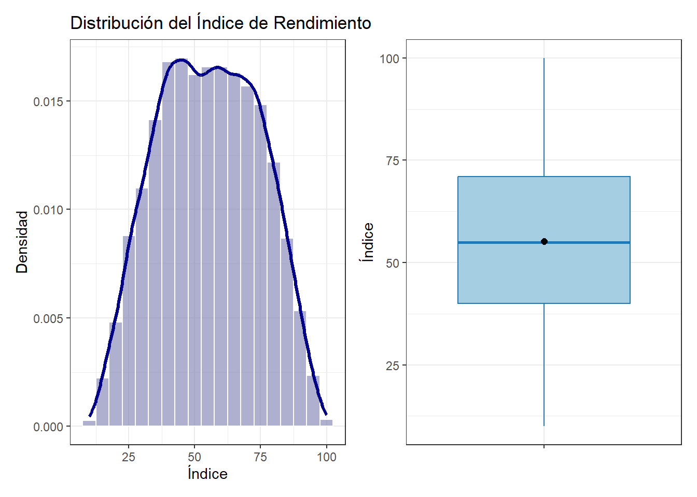
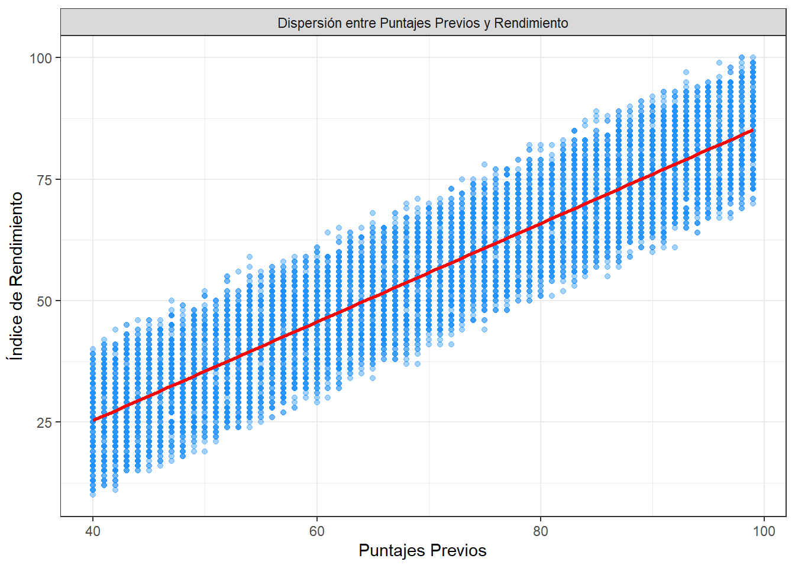
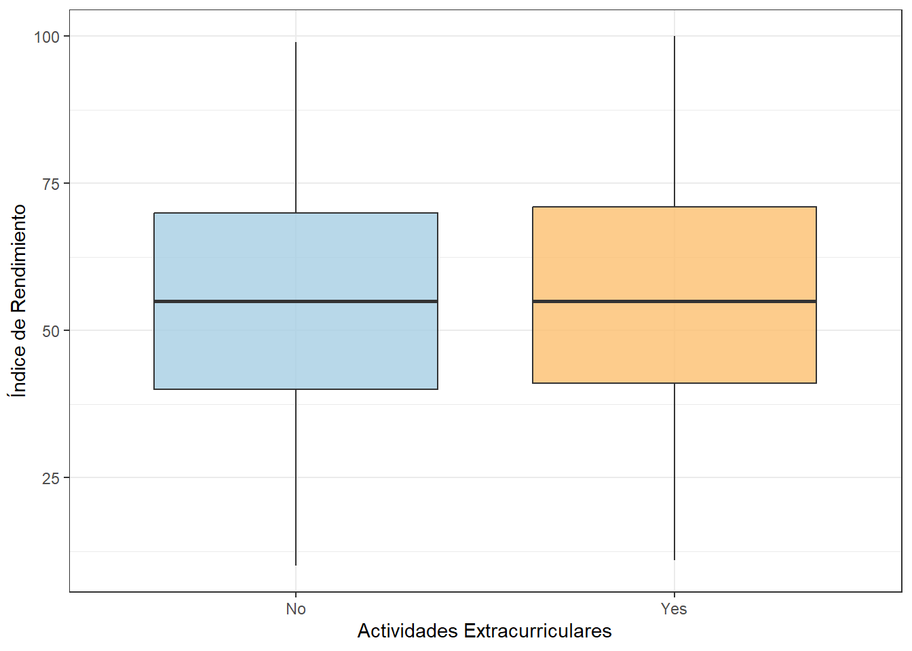
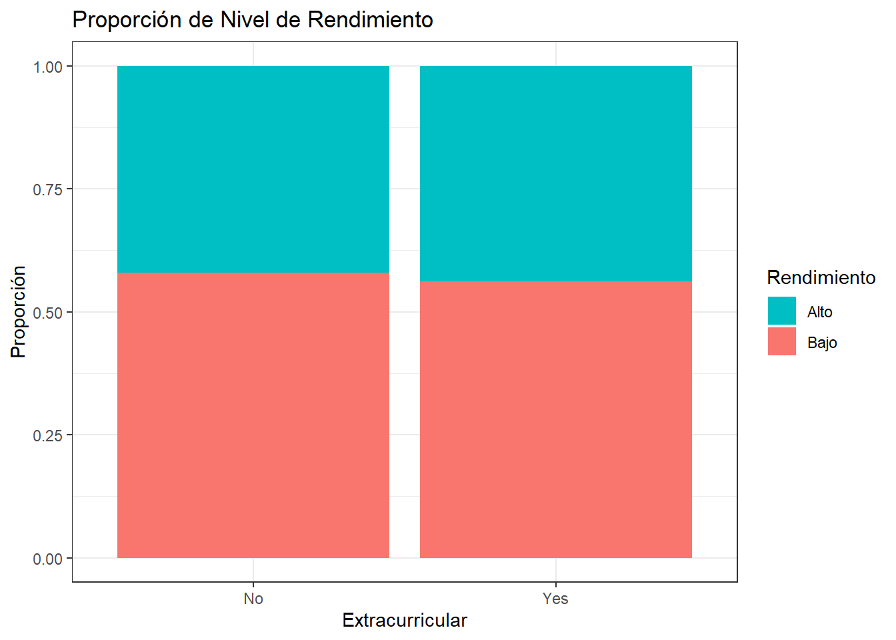
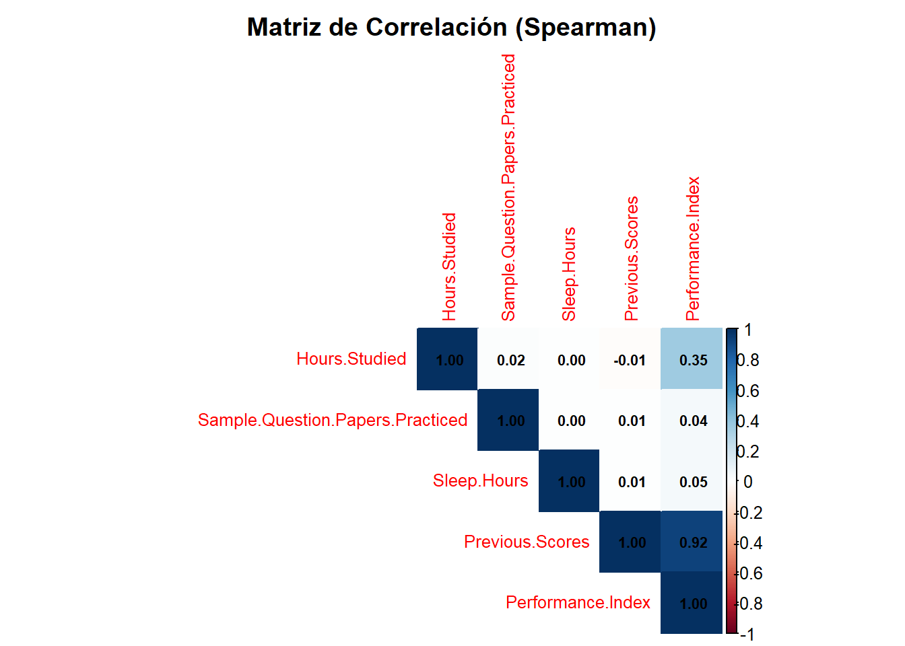

Chapter 2 ANALISIS EXPLORATORIO DE LA VARIABLE OBJETIVO
Realicemos el resumen estadístico de la nota final (Performance Index):
data %>% summarise(
n = length(Performance.Index),
media = mean(Performance.Index, na.rm = TRUE),
sd = sd(Performance.Index, na.rm = TRUE),
Q1 = quantile(Performance.Index, 0.25, na.rm = TRUE),
Q3 = quantile(Performance.Index, 0.75, na.rm = TRUE),
minimo = min(Performance.Index, na.rm = TRUE),
maximo = max(Performance.Index, na.rm = TRUE),
asimetria = skewness(Performance.Index, na.rm = TRUE),
curtosis = kurtosis(Performance.Index, na.rm = TRUE)
)## n media sd Q1 Q3 minimo maximo asimetria curtosis
## 1 10000 55.2248 19.21256 40 71 10 100 -0.001739766 2.139307Distribución del rendimiento estudiantil:
p_hist <- ggplot(data, aes(x = Performance.Index, y = after_stat(density))) +
geom_histogram(binwidth = 5, fill = "#797bb0", color = "white", alpha = 0.6) +
geom_density(color = "darkblue", linewidth = 1.2) +
labs(title = 'Distribución del Índice de Rendimiento', x = 'Índice', y = 'Densidad') +
theme_bw()
p_box <- ggplot(data, aes(x = "", y = Performance.Index)) +
geom_boxplot(fill = "#a6cee3", color = "#1f78b4", outlier.color = "red") +
stat_summary(fun = mean, geom = "point", shape = 20, size = 3, color = "black") +
labs(x = "", y = "Índice") + theme_bw()
p_hist + p_box
La variable objetivo presenta una distribución altamente simétrica, sin truncamientos artificiales ni presencia de valores atípicos (outliers).2.1 ANALISIS EXPLORATORIO BIVARIADO
Crucemos el índice de rendimiento con las variables independientes.
data %>%
ggplot(aes(x = Previous.Scores, y = Performance.Index)) +
geom_point(alpha = 0.4, color = "#1E90FF") +
geom_smooth(method = "lm", formula = y ~ x, se = FALSE, color = "red") +
labs(x = "Puntajes Previos", y = "Índice de Rendimiento") +
theme_bw() +
facet_grid(. ~ "Dispersión entre Puntajes Previos y Rendimiento")
Boxplot y proporciones según actividades extracurriculares:
data %>%
ggplot(aes(x = Extracurricular.Activities, y = Performance.Index)) +
geom_boxplot(fill = c("#a6cee3", "#fdbf6f"), alpha = 0.8) +
labs(x = "Actividades Extracurriculares", y = "Índice de Rendimiento") +
theme_bw()
data %>%
mutate(cat_rendimiento = ifelse(Performance.Index >= 60, "Alto", "Bajo")) %>%
ggplot(aes(x = Extracurricular.Activities, fill = cat_rendimiento)) +
geom_bar(position = "fill") +
labs(title = "Proporción de Nivel de Rendimiento", x = "Extracurricular", y = "Proporción", fill = "Rendimiento") +
scale_fill_manual(values = c("Alto" = "#00BFC4", "Bajo" = "#F8766D")) +
theme_bw()
2.2 ANALSIS DE CORRELACION
Evaluamos la normalidad para definir el tipo de correlación:
##
## Shapiro-Wilk normality test
##
## data: sample(data$Performance.Index, 5000)
## W = 0.9843, p-value < 2.2e-16##
## Shapiro-Wilk normality test
##
## data: sample(data$Previous.Scores, 5000)
## W = 0.95353, p-value < 2.2e-16Al rechazar la normalidad (p-valor < 0.05), aplicamos la correlación no paramétrica de Spearman.
data_num_indep <- data %>% select(where(is.numeric))
matriz_corr_spearman <- cor(data_num_indep, use = "complete.obs", method = "spearman")
corrplot(matriz_corr_spearman, method = "color", type = "upper", order = "hclust",
addCoef.col = "black", tl.cex = 0.8, number.cex = 0.7,
title = "Matriz de Correlación (Spearman)", mar = c(0,0,2,0))
Prueba de hipótesis:
## Warning in cor.test.default(data$Previous.Scores, data$Performance.Index, :
## cannot compute exact p-value with ties##
## Spearman's rank correlation rho
##
## data: data$Previous.Scores and data$Performance.Index
## S = 1.3212e+10, p-value < 2.2e-16
## alternative hypothesis: true rho is not equal to 0
## sample estimates:
## rho
## 0.9207251